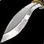
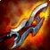

Tempest of Chaos
Tempest of ChaosTempest of Chaos17 to 132 damage, speed 1.8, 30 stamina, 22 intellect, 259 spell damage, 259 healing power, 17 spell hit rating (1.35%), 24 spell crit rating (1.09%)Drops from Archimonde, Mount Hyjal
17 to 132 damage, speed 1.8, 30 stamina, 22 intellect, 259 spell damage,
259 healing power, 17 spell hit rating (1.35%), 24 spell crit rating
(1.09%)
Drops from Archimonde, Mount Hyjal
What influencers say
Creators disagree about this item
Showing 3 of 13 captured remarks, widest reach first, with every view
represented
Sarthe
Sarthe · 92:03
77k views
Puts it on Protection Paladin, warlock and mage
Sarthe calls the sword amazing and one of the most intriguing items,
says the first goes to the prot paladin and a caster who takes it ahead
of them is griefing, and after that it is between warlocks and mages.
Zatar (Classic Wow Builds)
Zatar (Classic Wow Builds) · 75:26
58k views
Puts it on mage and warlock, not Protection Paladin
Zatar calls it the first contentious item and argues mage and warlock
should come before prot paladin because paladins already get so much
uncontested loot this tier, adding that the sword with its off-hand is
very close to Zardoom and best given to whoever has hit problems.
Knot
Knot · 34:10
4k views
Puts it on warlock and fire mage, not Protection Paladin
Knot says that if a Hammer of Judgment appears before the first sword,
that mace should go to the prot paladin so the sword can be freed for
one to three warlocks, and adds that fire casters using the
Hellfire-Encased Pendant lose least by taking the sword instead of
Zardoom.
Included for the Hammer of Judgment mechanism, which both sides of the
disagreement can use.
Showing all 4 spec cards.
No specs are selected, so no cards are showing. Use Show every spec to bring all of them back.
Protection Paladin
Prioritynot yet decided
Constraints
Special-attack hit cap9%threat
floor
Precision-3%
Improved Faerie Fire-3%assumed
Gear needs3%
Entry set1%short by
2%
Tier set, Tier 6 shoulder and chest and
hands and legs1%short by 2%
Closed by 4 hit gems against 11 sockets in the set.
Spell hit cap16%threat
floor
Precision-3%
Gear needs13.1%
Entry set0%short by
13.1%
Tier set, Tier 6 shoulder and chest and
hands and legs0%short by 13.1%
Closed by 4 hit gems against 11 sockets in the set.
The constraint that decides this spec's gear is crit immunity, which it
reaches at 490 defense skill, or 284 defense rating from gear.
That rating figure assumes Anticipation at 5 ranks, which supplies 20
defense skill. Without it the requirement is 332 rating.
Pushing crushing blows off the attack table needs 102.4% of miss, dodge,
parry and block on the character sheet.
White swings stop critting at 69.5%, measured at the special-attack hit
cap.
Nothing rostered reaches it this phase, so crit stays linear all tier.
No haste threshold to protect.
Delta
Tempest of
ChaosTempest of Chaos17 to 132 damage, speed 1.8, 30 stamina, 22
intellect, 259 spell damage, 259 healing power, 17 spell hit rating
(1.35%), 24 spell crit rating (1.09%)Drops from Archimonde, Mount
Hyjal in Protection
Paladin terms EPV
288.02
| Stat | Over Season 3 arena, Season 3 Vengeful Gladiator's GavelVengeful Gladiator's Gavel16 to 116 damage, speed 1.6, 30 stamina, 20 intellect, 247 spell damage, 247 healing power, 17 spell hit rating (1.35%), 18 resilience EPV 280.37 | Over second best, Hyjal Summit Hammer of JudgementHammer of Judgement20 to 129 damage, speed 1.8, 33 stamina, 22 intellect, 236 spell damage, 236 healing power, 22 spell hit rating (1.74%)Drops from Trash / zone drop, Black Temple; Trash / zone drop, Mount Hyjal EPV 275.76 | Over Season 2 arena, Season 2 Merciless Gladiator's GavelMerciless Gladiator's Gavel19 to 113 damage, speed 1.6, 27 stamina, 18 intellect, 225 spell damage, 225 healing power, 15 spell hit rating (1.19%), 18 resilience EPV 262.07 | Over third best, Serpentshrine Cavern Fang of the LeviathanFang of the Leviathan22 to 127 damage, speed 1.8, 28 stamina, 20 intellect, 221 spell damage, 221 healing power, 21 spell crit rating (0.95%)Drops from Leotheras the Blind, Serpentshrine Cavern EPV 259.42 | Over carried into the tier, Serpentshrine Cavern Fang of the LeviathanFang of the Leviathan22 to 127 damage, speed 1.8, 28 stamina, 20 intellect, 221 spell damage, 221 healing power, 21 spell crit rating (0.95%)Drops from Leotheras the Blind, Serpentshrine Cavern EPV 259.42 | Over fourth best, Gruul's Lair Bloodmaw Magus-BladeBloodmaw Magus-Blade36 to 136 damage, speed 1.8, 16 stamina, 15 intellect, 203 spell damage, 203 healing power, 25 spell crit rating (1.13%)Drops from Gruul the Dragonkiller, Gruul's Lair EPV 248.82 | Over best weapon, Hyjal Summit The Unbreakable WillThe Unbreakable Will112 to 209 damage, speed 1.6, 308 armor, 33 stamina, 21 defense ratingDrops from Anetheron, Mount Hyjal EPV 244.07 | |||||||
|---|---|---|---|---|---|---|---|---|---|---|---|---|---|---|
| Change | Converted | Change | Converted | Change | Converted | Change | Converted | Change | Converted | Change | Converted | Change | Converted | |
| armor | 0 | 0 | 0 | 0 | 0 | 0 | -308 | |||||||
| stamina | 0 | -3 | -30 health | +3 | +30 health | +2 | +20 health | +2 | +20 health | +14 | +140 health | -3 | -30 health | |
| intellect | +2 | 0 | +4 | +2 | +2 | +7 | +22 | |||||||
| spell damage | +12 | +23 | +34 | +38 | +38 | +56 | +259 | |||||||
| healing power | +12 | +23 | +34 | +38 | +38 | +56 | +259 | |||||||
| spell hit | 0 | -5 | -0.40% | +2 | +0.16% | +17 | +1.35% | +17 | +1.35% | +17 | +1.35% | +17 | +1.35% | |
| spell crit | +24 | +1.09% | +24 | +1.09% | +24 | +1.09% | +3 | +0.14% | +3 | +0.14% | -1 | -0.05% | +24 | +1.09% |
| defense rating | 0 | 0 | 0 | 0 | 0 | 0 | -21 | -8.88 defense skill | ||||||
| resilience | -18 | -18 resilience · -0.46% crit taken | 0 | -18 | -18 resilience · -0.46% crit taken | 0 | 0 | 0 | 0 | |||||
| Stat Highlights (Total Change) | -0.46% crit taken | -30 health | +30 health -0.46% crit taken | +20 health | +20 health | +140 health | -30 health -8.88 defense skill | |||||||
Arcane Mage
Prioritynot yet decided
Constraints
Spell hit cap16%spells
Arcane Focus-10%
Gear needs6%
Entry set6.6%clear
by 0.6%
Tier set, Tier 6 legs6.1%clear
by 0.1%
No crit cap.
Global cooldown floor at 50% spell haste, which nothing rostered reaches
from gear this phase.
Delta
Tempest of ChaosTempest of
Chaos17 to 132 damage, speed 1.8, 30
stamina, 22 intellect, 259 spell damage, 259 healing power, 17 spell hit
rating (1.35%), 24 spell crit rating (1.09%)Drops from Archimonde, Mount
Hyjal in Arcane Mage
terms EPV 170.89
| Stat | Over Season 3 arena, Season 3 Vengeful Gladiator's SpellbladeVengeful Gladiator's Spellblade16 to 116 damage, speed 1.6, 30 stamina, 20 intellect, 247 spell damage, 247 healing power, 17 spell hit rating (1.35%), 18 resilience EPV 153.85 | Over second best, Black Temple The Maelstrom's FuryThe Maelstrom's Fury20 to 129 damage, speed 1.8, 33 stamina, 21 intellect, 236 spell damage, 236 healing power, 22 spell crit rating (1.00%)Drops from High Warlord Naj'entus, Black Temple EPV 152.56 | Over third best, Serpentshrine Cavern Fang of the LeviathanFang of the Leviathan22 to 127 damage, speed 1.8, 28 stamina, 20 intellect, 221 spell damage, 221 healing power, 21 spell crit rating (0.95%)Drops from Leotheras the Blind, Serpentshrine Cavern EPV 143.22 | Over Season 2
arena, Season 2
 Merciless Gladiator's SpellbladeMerciless Gladiator's Spellblade19 to 113 damage, speed 1.6, 27 stamina, 18 intellect, 225 spell damage, 225 healing power, 15 spell hit rating (1.19%), 18 resilience EPV 139.89 |
Over fourth best, Karazhan
 Nathrezim MindbladeNathrezim Mindblade24 to 124 damage, speed 1.8, 18 stamina, 18 intellect, 203 spell damage, 203 healing power, 23 spell crit rating (1.04%)Drops from Prince Malchezaar, Karazhan EPV 132.74 |
Over best weapon, Gruul's Lair Bloodmaw Magus-BladeBloodmaw Magus-Blade36 to 136 damage, speed 1.8, 16 stamina, 15 intellect, 203 spell damage, 203 healing power, 25 spell crit rating (1.13%)Drops from Gruul the Dragonkiller, Gruul's Lair EPV 131.69 | Over carried into the tier, raid_drop The Nexus KeyThe Nexus Key145 to 312 damage, speed 3.2, 76 stamina, 52 intellect, 236 spell damage, 236 healing power, 51 spell crit rating (2.31%)Drops from Kael'thas Sunstrider, Tempest Keep | |||||||
|---|---|---|---|---|---|---|---|---|---|---|---|---|---|---|
| Change | Converted | Change | Converted | Change | Converted | Change | Converted | Change | Converted | Change | Converted | Change | Converted | |
| stamina | 0 | -3 | +2 | +3 | +12 | +14 | -46 | |||||||
| intellect | +2 | +0.03% spell crit · +0.57 spell damage | +1 | +0.01% spell crit · +0.29 spell damage | +2 | +0.03% spell crit · +0.57 spell damage | +4 | +0.06% spell crit · +1.15 spell damage | +4 | +0.06% spell crit · +1.15 spell damage | +7 | +0.10% spell crit · +2.01 spell damage | -30 | -0.43% spell crit · -8.62 spell damage |
| spell damage | +12 | +23 | +38 | +34 | +56 | +56 | +23 | |||||||
| healing power | +12 | +23 | +38 | +34 | +56 | +56 | +23 | |||||||
| spell hit | 0 | +17 | +1.35% | +17 | +1.35% | +2 | +0.16% | +17 | +1.35% | +17 | +1.35% | +17 | +1.35% | |
| spell crit | +24 | +1.09% | +2 | +0.09% | +3 | +0.14% | +24 | +1.09% | +1 | +0.05% | -1 | -0.05% | -27 | -1.22% |
| resilience | -18 | -18 resilience | 0 | 0 | -18 | -18 resilience | 0 | 0 | 0 | |||||
| Stat Highlights (Total Change) | +1.12% spell crit +12.57 spell damage +12 healing power | +0.10% spell crit +23.29 spell damage +23 healing power +1.35% spell hit | +0.16% spell crit +38.58 spell damage +38 healing power +1.35% spell hit | +1.14% spell crit +35.15 spell damage +34 healing power +0.16% spell hit | +0.10% spell crit +57.15 spell damage +56 healing power +1.35% spell hit | +0.06% spell crit +58.01 spell damage +56 healing power +1.35% spell hit | -1.65% spell crit +14.38 spell damage +23 healing power +1.35% spell hit | |||||||
Affliction Warlock
Prioritynot yet decided
Constraints
Spell hit cap16%spells
Totem of Wrath-3%
Gear needs13.1%
The Suppression talent does not cover this spec's filler spell, so none
of it counts.
Entry set16.1%clear
by 3%
Tier set, Tier 6 head and shoulder and
hands18.3%clear by 5.2%
No crit cap.
Part of this spec's damage is periodic, and periodic damage cannot crit
in this patch, so crit reaches less of its output than the character
sheet suggests.
Global cooldown floor at 50% spell haste, which nothing rostered reaches
from gear this phase.
Delta
Tempest of ChaosTempest of
Chaos17 to 132 damage, speed 1.8, 30
stamina, 22 intellect, 259 spell damage, 259 healing power, 17 spell hit
rating (1.35%), 24 spell crit rating (1.09%)Drops from Archimonde, Mount
Hyjal in Affliction
Warlock terms EPV
284.21
| Stat | Over Season 3 arena, Season 3 Vengeful Gladiator's SpellbladeVengeful Gladiator's Spellblade16 to 116 damage, speed 1.6, 30 stamina, 20 intellect, 247 spell damage, 247 healing power, 17 spell hit rating (1.35%), 18 resilience EPV 257.59 | Over second best, Black Temple The Maelstrom's FuryThe Maelstrom's Fury20 to 129 damage, speed 1.8, 33 stamina, 21 intellect, 236 spell damage, 236 healing power, 22 spell crit rating (1.00%)Drops from High Warlord Naj'entus, Black Temple EPV 236.97 | Over Season 2 arena, Season 2 Merciless Gladiator's SpellbladeMerciless Gladiator's Spellblade19 to 113 damage, speed 1.6, 27 stamina, 18 intellect, 225 spell damage, 225 healing power, 15 spell hit rating (1.19%), 18 resilience EPV 233.87 | Over carried into the tier, Season 2 Merciless Gladiator's SpellbladeMerciless Gladiator's Spellblade19 to 113 damage, speed 1.6, 27 stamina, 18 intellect, 225 spell damage, 225 healing power, 15 spell hit rating (1.19%), 18 resilience EPV 233.87 | Over third best, Serpentshrine Cavern Fang of the LeviathanFang of the Leviathan22 to 127 damage, speed 1.8, 28 stamina, 20 intellect, 221 spell damage, 221 healing power, 21 spell crit rating (0.95%)Drops from Leotheras the Blind, Serpentshrine Cavern EPV 222.20 | Over fourth best, Gruul's Lair Bloodmaw Magus-BladeBloodmaw Magus-Blade36 to 136 damage, speed 1.8, 16 stamina, 15 intellect, 203 spell damage, 203 healing power, 25 spell crit rating (1.13%)Drops from Gruul the Dragonkiller, Gruul's Lair EPV 206.55 | Over best weapon, Karazhan Nathrezim MindbladeNathrezim Mindblade24 to 124 damage, speed 1.8, 18 stamina, 18 intellect, 203 spell damage, 203 healing power, 23 spell crit rating (1.04%)Drops from Prince Malchezaar, Karazhan EPV 206.18 | |||||||
|---|---|---|---|---|---|---|---|---|---|---|---|---|---|---|
| Change | Converted | Change | Converted | Change | Converted | Change | Converted | Change | Converted | Change | Converted | Change | Converted | |
| stamina | 0 | -3 | +3 | +3 | +2 | +14 | +12 | |||||||
| intellect | +2 | +0.02% spell crit | +1 | +0.01% spell crit | +4 | +0.05% spell crit | +4 | +0.05% spell crit | +2 | +0.02% spell crit | +7 | +0.09% spell crit | +4 | +0.05% spell crit |
| spell damage | +12 | +23 | +34 | +34 | +38 | +56 | +56 | |||||||
| healing power | +12 | +23 | +34 | +34 | +38 | +56 | +56 | |||||||
| spell hit | 0 | +17 | +1.35% | +2 | +0.16% | +2 | +0.16% | +17 | +1.35% | +17 | +1.35% | +17 | +1.35% | |
| spell crit | +24 | +1.09% | +2 | +0.09% | +24 | +1.09% | +24 | +1.09% | +3 | +0.14% | -1 | -0.05% | +1 | +0.05% |
| resilience | -18 | -18 resilience | 0 | -18 | -18 resilience | -18 | -18 resilience | 0 | 0 | 0 | ||||
| Stat Highlights (Total Change) | +1.11% spell crit +12 spell damage +12 healing power | +0.10% spell crit +23 spell damage +23 healing power +1.35% spell hit | +1.14% spell crit +34 spell damage +34 healing power +0.16% spell hit | +1.14% spell crit +34 spell damage +34 healing power +0.16% spell hit | +0.16% spell crit +38 spell damage +38 healing power +1.35% spell hit | +0.04% spell crit +56 spell damage +56 healing power +1.35% spell hit | +0.09% spell crit +56 spell damage +56 healing power +1.35% spell hit | |||||||
Destruction Warlock
Prioritynot yet decided
Constraints
Spell hit cap16%spells
Totem of Wrath-3%
Gear needs13.1%
No hit talent exists for this spec.
Entry set13.5%clear
by 0.4%
Tier set, Tier 6 head and shoulder and
hands15.4%clear by 2.3%
No crit cap.
Global cooldown floor at 50% spell haste, which nothing rostered reaches
from gear this phase.
Delta
Tempest of ChaosTempest of
Chaos17 to 132 damage, speed 1.8, 30
stamina, 22 intellect, 259 spell damage, 259 healing power, 17 spell hit
rating (1.35%), 24 spell crit rating (1.09%)Drops from Archimonde, Mount
Hyjal in Destruction
Warlock terms EPV
363.09
| Stat | Over Season 3 arena, Season 3 Vengeful Gladiator's SpellbladeVengeful Gladiator's Spellblade16 to 116 damage, speed 1.6, 30 stamina, 20 intellect, 247 spell damage, 247 healing power, 17 spell hit rating (1.35%), 18 resilience EPV 329.68 | Over second best, Black Temple The Maelstrom's FuryThe Maelstrom's Fury20 to 129 damage, speed 1.8, 33 stamina, 21 intellect, 236 spell damage, 236 healing power, 22 spell crit rating (1.00%)Drops from High Warlord Naj'entus, Black Temple EPV 307.92 | Over Season 2 arena, Season 2 Merciless Gladiator's SpellbladeMerciless Gladiator's Spellblade19 to 113 damage, speed 1.6, 27 stamina, 18 intellect, 225 spell damage, 225 healing power, 15 spell hit rating (1.19%), 18 resilience EPV 299.45 | Over carried into the tier, Season 2 Merciless Gladiator's SpellbladeMerciless Gladiator's Spellblade19 to 113 damage, speed 1.6, 27 stamina, 18 intellect, 225 spell damage, 225 healing power, 15 spell hit rating (1.19%), 18 resilience EPV 299.45 | Over third best, Serpentshrine Cavern Fang of the LeviathanFang of the Leviathan22 to 127 damage, speed 1.8, 28 stamina, 20 intellect, 221 spell damage, 221 healing power, 21 spell crit rating (0.95%)Drops from Leotheras the Blind, Serpentshrine Cavern EPV 288.62 | Over fourth best, Karazhan Nathrezim MindbladeNathrezim Mindblade24 to 124 damage, speed 1.8, 18 stamina, 18 intellect, 203 spell damage, 203 healing power, 23 spell crit rating (1.04%)Drops from Prince Malchezaar, Karazhan EPV 267.24 | Over best weapon, Gruul's Lair Bloodmaw Magus-BladeBloodmaw Magus-Blade36 to 136 damage, speed 1.8, 16 stamina, 15 intellect, 203 spell damage, 203 healing power, 25 spell crit rating (1.13%)Drops from Gruul the Dragonkiller, Gruul's Lair EPV 267.20 | |||||||
|---|---|---|---|---|---|---|---|---|---|---|---|---|---|---|
| Change | Converted | Change | Converted | Change | Converted | Change | Converted | Change | Converted | Change | Converted | Change | Converted | |
| stamina | 0 | -3 | +3 | +3 | +2 | +12 | +14 | |||||||
| intellect | +2 | +0.02% spell crit | +1 | +0.01% spell crit | +4 | +0.05% spell crit | +4 | +0.05% spell crit | +2 | +0.02% spell crit | +4 | +0.05% spell crit | +7 | +0.09% spell crit |
| spell damage | +12 | +23 | +34 | +34 | +38 | +56 | +56 | |||||||
| healing power | +12 | +23 | +34 | +34 | +38 | +56 | +56 | |||||||
| spell hit | 0 | +17 | +1.35% | +2 | +0.16% | +2 | +0.16% | +17 | +1.35% | +17 | +1.35% | +17 | +1.35% | |
| spell crit | +24 | +1.09% | +2 | +0.09% | +24 | +1.09% | +24 | +1.09% | +3 | +0.14% | +1 | +0.05% | -1 | -0.05% |
| resilience | -18 | -18 resilience | 0 | -18 | -18 resilience | -18 | -18 resilience | 0 | 0 | 0 | ||||
| Stat Highlights (Total Change) | +1.11% spell crit +12 spell damage +12 healing power | +0.10% spell crit +23 spell damage +23 healing power +1.35% spell hit | +1.14% spell crit +34 spell damage +34 healing power +0.16% spell hit | +1.14% spell crit +34 spell damage +34 healing power +0.16% spell hit | +0.16% spell crit +38 spell damage +38 healing power +1.35% spell hit | +0.09% spell crit +56 spell damage +56 healing power +1.35% spell hit | +0.04% spell crit +56 spell damage +56 healing power +1.35% spell hit | |||||||